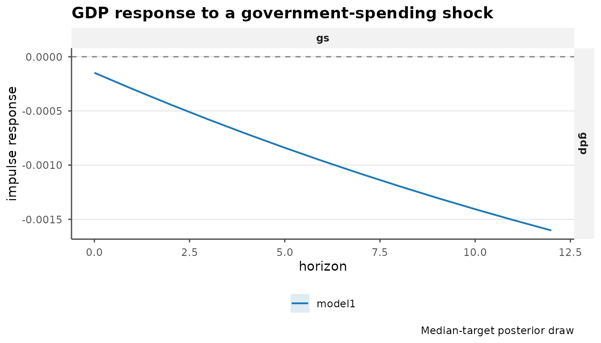

bsvarPost starts where bsvars and
bsvarSIGNs stop: with an estimated posterior. It turns
posterior results into tidy tables, cumulative responses, comparisons,
probability statements, coherent representative draws, event summaries,
and publication-ready output.
This guide assumes that you already know how to specify and estimate
a model with one of the parent packages. In one short workflow, we
examine the response of US GDP (gdp) to the
government-spending shock (gs) in the
bsvars::us_fiscal_lsuw data. The included fixtures keep the
article fast; use the same calls with your own posterior object.
Start from a posterior
Only the estimation handoff matters here. For example, a minimal
bsvars workflow is:
data("us_fiscal_lsuw", package = "bsvars")
spec <- bsvars::specify_bsvar$new(us_fiscal_lsuw, p = 1)
post <- bsvars::estimate(spec, S = 2000, thin = 1,
show_progress = FALSE)The rest of the guide uses the precomputed post loaded
above. It is a regular PosteriorBSVAR object, so there is
no import or conversion step.
Use one tidy extraction pattern
The canonical pattern is: pass the posterior to a
tidy_*() function, then filter the resulting tibble to the
research question. Here we request 90% pointwise intervals and keep four
horizons from the GDP response to a spending shock.
irf_tbl <- tidy_irf(post, horizon = 12, probability = 0.90)
irf_focus <- subset(irf_tbl, variable == "gdp" & shock == "gs" &
horizon %in% c(0, 4, 8, 12),
select = c(variable, shock, horizon, median, lower, upper))
irf_focus
#> # A tibble: 4 × 6
#> variable shock horizon median lower upper
#> <chr> <chr> <dbl> <dbl> <dbl> <dbl>
#> 1 gdp gs 0 -0.0000935 -0.00115 0.000901
#> 2 gdp gs 4 -0.000702 -0.00191 0.000522
#> 3 gdp gs 8 -0.00119 -0.00301 0.000284
#> 4 gdp gs 12 -0.00158 -0.00394 0.000289The same shape extends to other posterior quantities. Summary tables
contain posterior location and interval columns; set
draws = TRUE when downstream work needs individual
draws.
tidy_cdm(post, horizon = 12) # cumulative responses
tidy_fevd(post, horizon = 12) # variance shares
tidy_hd(post) # historical contributions
tidy_forecast(post, horizon = 8) # predictive paths
tidy_shocks(post) # structural shocksThis is usually enough to join results to annotations, filter panels, or use a different graphics system without unpacking posterior arrays by hand.
Accumulate responses with cdm()
cdm() retains the posterior draws while accumulating the
response at each horizon. tidy_cdm() then applies the same
extraction pattern used above.
cdm_draws <- cdm(post, horizon = 12)
cdm_tbl <- tidy_cdm(cdm_draws, probability = 0.90)
cdm_focus <- subset(cdm_tbl, variable == "gdp" & shock == "gs" &
horizon %in% c(0, 4, 8, 12),
select = c(variable, shock, horizon, median, lower, upper))
cdm_focus
#> # A tibble: 4 × 6
#> variable shock horizon median lower upper
#> <chr> <chr> <dbl> <dbl> <dbl> <dbl>
#> 1 gdp gs 0 -0.0000935 -0.00115 0.000901
#> 2 gdp gs 4 -0.00211 -0.00817 0.00344
#> 3 gdp gs 8 -0.00618 -0.0169 0.00487
#> 4 gdp gs 12 -0.0121 -0.0311 0.00547These are cumulative dynamic responses. Whether they have an economic
multiplier interpretation depends on the model’s transformations and
scaling; see ?cdm for the scale_by and
scale_var options.
Compare specifications in the same table
The second fixture is the same three-variable system with a longer
lag order. Named posterior arguments become stable labels in the
model column.
cdm_comparison <- compare_cdm(
baseline = post,
longer_lag = post_alt,
horizon = 12,
probability = 0.90
)
subset(cdm_comparison, variable == "gdp" & shock == "gs" &
horizon %in% c(4, 8, 12),
select = c(model, horizon, median, lower, upper))
#> # A tibble: 6 × 5
#> model horizon median lower upper
#> <chr> <dbl> <dbl> <dbl> <dbl>
#> 1 baseline 4 -0.00211 -0.00817 0.00344
#> 2 baseline 8 -0.00618 -0.0169 0.00487
#> 3 baseline 12 -0.0121 -0.0311 0.00547
#> 4 longer_lag 4 -0.00277 -0.00934 0.00635
#> 5 longer_lag 8 -0.00866 -0.0262 0.0134
#> 6 longer_lag 12 -0.0150 -0.0471 0.0209Use the same pattern with compare_irf(),
compare_fevd(), and the other compare_*()
helpers. The comparison is descriptive: it puts like-for-like posterior
summaries together but does not choose a preferred specification.
Ask a posterior probability question
Suppose the question is: what is the posterior probability that the GDP response to the spending shock is positive at each selected horizon?
prob_positive <- hypothesis_irf(
post,
variables = "gdp",
shocks = "gs",
horizon = c(0, 4, 8, 12),
relation = ">",
value = 0
)
prob_positive[, c("variable", "shock", "horizon", "posterior_prob")]
#> # A tibble: 4 × 4
#> variable shock horizon posterior_prob
#> <chr> <chr> <dbl> <dbl>
#> 1 gdp gs 0 0.47
#> 2 gdp gs 4 0.185
#> 3 gdp gs 8 0.11
#> 4 gdp gs 12 0.09posterior_prob is a model-conditional posterior
probability, not a frequentist p-value. For questions that must hold
across several horizons use joint_hypothesis_irf(); for
economically meaningful thresholds use magnitude_audit();
and for a band covering an entire selected path use
simultaneous_irf(). The Inference and Comparison
article develops these distinctions.
Keep one coherent draw and summarize timing
Pointwise medians need not correspond to any single posterior draw.
median_target_irf() instead selects one internally coherent
draw closest to the median response path over the requested subset.
representative <- median_target_irf(
post,
horizon = 12,
variables = "gdp",
shocks = "gs"
)
representative_path <- subset(summary(representative),
variable == "gdp" & shock == "gs")
subset(representative_path, horizon %in% c(0, 4, 8, 12),
select = c(variable, shock, horizon, median, draw_index, method))
#> # A tibble: 4 × 6
#> variable shock horizon median draw_index method
#> <chr> <chr> <dbl> <dbl> <int> <chr>
#> 1 gdp gs 0 -0.000148 144 median_target
#> 2 gdp gs 4 -0.000712 144 median_target
#> 3 gdp gs 8 -0.00119 144 median_target
#> 4 gdp gs 12 -0.00160 144 median_targetFor a compact timing statement, peak_response() reports
both the response level and the horizon of the peak for every posterior
draw, then summarizes those quantities.
peak <- peak_response(
post,
horizon = 12,
variables = "gdp",
shocks = "gs",
absolute = TRUE
)
peak[, c("variable", "shock", "median_value", "median_horizon")]
#> # A tibble: 1 × 4
#> variable shock median_value median_horizon
#> <chr> <chr> <dbl> <dbl>
#> 1 gdp gs -0.00158 12For persistence questions, duration_response(),
half_life_response(), and time_to_threshold()
provide related summaries without reducing the posterior to a single
curve.
Move from an HD path to an event question
Start with draw-level tidy_hd() data, then choose a
window that is substantively meaningful for the application. This
illustrative four-quarter window shows the handoff from event
aggregation to shock ranking.
hd_draws <- tidy_hd(post, draws = TRUE)
event_tbl <- tidy_hd_event(
hd_draws,
start = "1958",
end = "1958.75"
)
subset(event_tbl, variable == "gdp",
select = c(variable, shock, event_start, event_end, median))
#> # A tibble: 3 × 5
#> variable shock event_start event_end median
#> <chr> <chr> <chr> <chr> <dbl>
#> 1 gdp gdp 1958 1958.75 -14.9
#> 2 gdp gs 1958 1958.75 -3.15
#> 3 gdp ttr 1958 1958.75 -1.23
ranking <- shock_ranking(hd_draws, start = "1958", end = "1958.75",
variables = "gdp")
ranking[, c("variable", "shock", "median", "rank")]
#> # A tibble: 3 × 4
#> variable shock median rank
#> <chr> <chr> <dbl> <int>
#> 1 gdp gdp -14.9 1
#> 2 gdp gs -3.15 2
#> 3 gdp ttr -1.23 3This adds event-level questions to the parent package’s historical decomposition rather than replacing its standard HD workflow. Window choice and contribution interpretation are covered in Historical-Decomposition Events.
Finish with publication-ready output
One call turns the representative draw into a consistently styled
ggplot2 figure. The returned object remains a normal
ggplot, so annotations can still be added before
saving.
publish_bsvar_plot(representative_path, family = "irf", preset = "paper",
title = "GDP response to a government-spending shock",
caption = "Median-target posterior draw")
For a table, keep one backend and the same focused result:
as_kable(peak, caption = "Peak absolute GDP response",
digits = 3, preset = "compact")| Model | Variable | Shock | Mean value | Median value | Lower value | Upper value | Mean horizon | Median horizon | Lower horizon | Upper horizon |
|---|---|---|---|---|---|---|---|---|---|---|
| model1 | gdp | gs | -0.017 | -0.002 | -0.004 | 0.001 | 10.44 | 12 | 0 | 12 |
Where next?
- Inference and Comparison covers joint and magnitude questions, simultaneous bands, and richer model comparisons.
- Historical-Decomposition Events covers event windows, contribution views, and shock ranking.
-
Sign-Restricted
Workflows covers
most_likely_admissible_*(),restriction_audit(),acceptance_diagnostics(), and sign-model comparisons.
The reference index lists variants and lower-level helpers when a workflow needs more control.